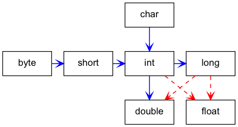

JDK 相关知识点
Table of Contents
1 基础知识
1.1 八个基本数据类型
Java 语言中有 8 个基本类型，和 C++ 语言不同的是 Java 的基本类型的存储空间是固 定的，每种类型的信息如下
| 类型 | 存储空间 | 封装类 | 说明 |
|---|---|---|---|
| boolean | 1 bit | Boolean | |
| byte | 1 字节 | Byte | |
| char | 2 字节 | Character | Unicode 编码 |
| short | 2 字节 | Short | |
| int | 4 字节 | Integer | |
| long | 8 字节 | Long | |
| float | 4 字节 | Float | |
| double | 8 字节 | Double |
数值基本类型可以存在如下的自动转换（红色虚线表示损失精度，蓝色实线表示不损失 精度）：

基本类型和封装类的区别
- 传值方式不同
- 基本数据类型（原始数据类型）是值传递，封装类型是引用传递
- 封装类有方法和属性
- 可以利用这些方法和属性来处理数据，例如
Integer.parseInt(String str); - 基本数据类型都是
final修饰的，不能被继承和扩展新的类、方法
- 可以利用这些方法和属性来处理数据，例如
- 默认值不同
- 如
int i;默认值为 0，而Integer j;默认值为null, - 因为此时
j为对象，对象默认值为null
- 如
- 存储位置不同
- 定义的基本数据类型的变量和对象的引用变量（地址）存储在栈中，而实际对应的 对象（value）是存储在堆中
1.2 == 与 equals() 方法的区别
- 对于基本类型，一般使用
==进行比较==比较的是值- equals() 是方法，不支持基本类型直接比较，需要使用包装类
- 对于引用类型,
==比较的是地址, equals() 方法比较的是对象的值- String 是一个特殊的引用类型。对于两个字符串的比较，不管是
==还是 equals() 方法这两者比较的都是字符串是否相同 String 对象不可变的 (Immutable), 可能存在编译器优化, 可以看下面例子
String s1 = "Hello"; String s2 = "Hello"; String s3 = new String("Hello"); String s4 = "Hel" + "lo"; // String is immutable, it will compiles to "Hello" System.out.println(s1 == s2); // => true System.out.println(s1.equals(s2)); // => ture System.out.println(s1 == s3); // => false System.out.println(s1.equals(s3)); // => ture System.out.println(s1 == s4); // => true System.out.println(s1.equals(s4)); // => true
- String 是一个特殊的引用类型。对于两个字符串的比较，不管是
1.3 hashCode() 和 equals() 方法
Object 类中的方法定义如下
public native int hashCode(); public boolean equals(Object obj) { return (this == obj); }
- hashCode() 是本地方法
- Object 类中的 equals() 方法使用
==运算符直接比较两个对象的地址
1.4 错误和异常
- 错误
java.lang.Error是 Throwable 的子类- 用于标记严重错误，表示系统级的错误和程序不必处理的异常
- 合理的应用程序不应该去
try/catch这种错误 - 是恢复不是不可能但很困难的情况下的一种严重问题；比如内存溢出，不可能指望 程序能处理这样的情况
- 异常
java.lang.Exception是 Throwable 的子类- 表示需要捕捉或者需要程序进行处理的异常, 是一种设计或实现问题
- 它表示如果程序运行正常，从不会发生的情况, 并且鼓励用户程序去
catch - Checked Exceptions 检查了的异常发生在编译阶段，必须要使用
try/catch（或者throws）否则编译不通过 RuntimeException属于 Unchecked Exceptions, 不需要try/catch, 例如- NullPointerException 空指针
- ArrayIndexOutOfBoundException 数组越界
- IllegalArgumentException 参数不合法
- OutOfMemoryError 内存溢出
- 《Effective Java》 中对于异常处理总结如下
- 不要将异常处理用于正常的控制流（设计良好的 API 不应该强迫它的调用者为了 正常的控制流而使用异常）
- 对可以恢复的情况使用受检异常，对编程错误使用运行时异常
- 避免不必要的使用受检异常（可以通过一些状态检测手段来避免异常的发生）
- 优先使用标准的异常
- 每个方法抛出的异常都要有文档
- 保持异常的原子性
- 不要在
catch中忽略掉捕获到的异常
处理异常的一种方式是在类方法的定义中 throws 相应的异常
class App148 { public static void main(String args[]) throws MyException { MyException myecpt = new MyException("Ops!"); throw myexcpt; // System.out.println("Dead code"); } } class MyException extends IOException { MyException(String message) { super(message); } }
或者使用 try/catch 块来捕获异常进行处理
public static void main(String args[]) { int num1, num2; try { num1 = 0; num2 = 62 / num1; System.out.println(num2); System.out.println("Hey I'm at the end of try block"); } catch (ArithmeticException e) { System.out.println("You should not divide a number by zero"); } catch (Exception e) { System.out.println("Exception occurred"); } System.out.println("I'm out of try-catch block in Java."); }
1.5 序列化
- 序列化就是一种用来处理对象流的机制，所谓对象流也就是将对象的内容进行流化。 可以对流化后的对象进行读写操作，也可将流化后的对象传输于网络之间。序列化是 为了解决在对对象流进行读写操作时所引发的问题
- 序列化的实现
- 将需要被序列化的类实现
Serializable接口 Serializable接口没有需要实现的方法，只是为了标注该对象是可被序列化的
- 将需要被序列化的类实现
- 被
transient修饰的变量不属于对象持久化的一部分，该变量内容在序列化后无 法获得访问
1.6 匿名内部类和 Lambda 表达式
- 匿名内部类对象在编译后会生成一个单独的类文件, 当 Lambda 表达式转换为私有方
法时, 该类文件会增加 jar 文件的大小。它使用
invokedynamic字节码指令动态 绑定此方法, 从而节省了时间和内存 - 可以使用
this关键字表示 Lambda 表达式中的当前类, 而对于匿名内部类,this关键字可以表示该特定的匿名内部类 - 匿名内部类可以用于多个抽象方法, 而 Lambda 表达式专门用于函数接口
- 我们只需要在 Lambda 表达式中提供函数体, 而对于匿名内部类, 则需要编写冗余的 类定义
// 匿名内部类写法 Runnable run01 = new Runnable() { @Override public void run() { System.out.println("run01"); } }; // Lambda 表达式写法 Runnable run02 = () -> { System.out.println("run02"); };
2 面向对象
2.1 对象初始化和销毁
一般类的初始化工具有以下几种方式
- 静态初始化块只在类第一次实例化才调用一次
- 对象初始化块每次对象实例化都调用一次，并且是中构造器调用前调用
import java.util.Random; class Employee { private static int nextId; private int id; private String name; private double salary; // 静态初始化块: 初始化静态变量 static { System.out.println("Static Initialezation Block"); Random gen = new Random(); nextId = gen.nextInt(1000); } // 对象初始化块: 当对象实例化时调用 { System.out.println("Object Initialezation Block"); id = nextId; nextId++; } // 默认构造器 public Employee() { System.out.println("Default Constructor"); } public static void main(String[] args) { Employee e1 = new Employee(); Employee e2 = new Employee(); } } //////////////////////////////////////////////////////////////////////////////// // Static Initialezation Block // Object Initialezation Block // Default Constructor // Object Initialezation Block // Default Constructor ////////////////////////////////////////////////////////////////////////////////
类和实例初始化方法
- Java 的对象初始化的构造器相当于调用
<init>()方法 - 类的初始化调用
<clinit>()方法
对象销毁:
- Java 有自己的垃圾回收机制 (GC), 在 GC 过程中会将没有用的对象进行释放
- 一般
finalize()方法只会在对象内存回收前被调用一次 - 我们不需要显示让对象销毁, 而是让 GC 来自动处理对象的析构，并且当需要阻止对
象消亡时，就需要显示将保护的对象通过
finalize()挂载到 GCRoot 上 - 有时候会显示将将引用置空来帮助 GC
2.2 面向对象的三大特征
2.2.1 继承
- 继承是从已有的类中派生出新的类，新的类能吸收已有类的数据属性和行为，并能 扩展新的能力
继承可以提高代码的复用，缩短开发周期
class Employee { private String name; private double salary; public getName() { } public getSalary() { } } // 使用 extends 关键字 class Manager extends Employee { private double bonus; public getSalary() { } public setBonus(double bonus) { } }
final类不允许继承,final方法不允许 Override
final class Executive extends Manager { // ... } class Employee { private String name; public final String getName() { return this.name; } }
2.2.2 多态
- 多态 (Polymorphism) 按字面的意思就是多种状态，即同一个实体同时具有多种形式
- 一般表现形式是程序在运行的过程中，同一种类型在不同的条件下表现不同的结果。 多态也称为动态绑定，一般是在运行时刻才能确定方法的具体执行对象，这个过程 也称为动态委派
- 多态的好处如下
- 将接口和实现分开，改善代码的组织结构和可读性，还能创建可拓展的程序
- 消除类型之间的耦合关系。允许将多个类型视为同一个类型
- 一个多态方法的调用允许有多种表现形式
Employee e = new Employee(); e.getName(); // => Employee.getName() e.getSalary(); // => Employee.getSalary() Manager m = new Manager(); m.getName(); // => Employee.getName() m.getSalary(); // => Manager.getSalary() m.setBonus(1000.0); // Manager.setBonus(...)
2.2.3 封装
- 封装就是把对象的属性和行为（或服务）结合为一个独立的整体，并尽可能隐藏对 象的内部实现细节
- 封装的好处如下
- 隐藏实现细节。让客户端程序员无法触及他们不应该触及的部分
- 允许可设计者可以改变类内部的工作方式而不用担心会影响到客户端程序员
2.3 Overload 和 Override
Overload 是 重载 的意思，Override 是 覆盖 的意思，也就是 重写

- Overload 表示同一个类中可以有多个名称相同的方法，但这些方法的参数列表各不
相同
- Overload 的参数列表不同包括：参数类型不同，参数个数不同
- Overload 不能重载函数返回值，即方法名称、参数个数和参数类型相同的方法被 视为同一个重载方法
- Overload 也不能覆盖访问权限、抛出的异常。方法的异常类型和数目不会对覆盖 造成影响
- Override 表示子类中的方法可以与父类中的某个方法的名称和参数完全相同，通过
子类创建的实例对象调用这个方法时，将调用子类中的定义方法，这相当于把父类中
定义的那个完全相同的方法给覆盖了
- Override 可以用于接口实现类中实现接口类中的方法
- Override 可以在子类中实现父类的方法，相当于子类中的方法覆盖了父类中的方 法，是一种实现多态的重要途径
- Override 覆盖父类方法时，子类只能抛出比父类更少的异常。或者是抛出父类抛 出的异常的子异常
- Override 不能覆盖父类中的 private 方法
class Employee { private String firstname; private String lastname; public void setName(String firstname) { this.firstname = firstname; this.lastname = null; } public void setName(String firstname, String lastname) { this.firstname = firstname; this.lastname = lastname; } } class Teacher extends Employee { private String fullname; @Override public void setName(String firstname, String lastname) { this.firstname = firstname; this.lastname = lastname; this.fullname = firstname + " " + lastname; } }
2.4 静态变量和实例变量
- 静态变量前要加
static关键字，而实例变量前则不加 - 在程序运行时的区别：
- 实例变量属于某个对象的属性，必须创建了实例对象，其中的实例变量才会被分配 空间，才能使用这个实例变量。静态变量不属于某个实例对象，而是属于类，所以 也称为类变量
- 只要程序加载了类的字节码，不用创建任何实例对象，静态变量就会被分配空间， 静态变量就可以被使用了
- 总之，实例变量必须创建对象后才可以通过这个对象来使用，静态变量则可以直接 使用类名来引用
2.5 final 关键字
- 修饰类：表示该类不能被继承
- 修饰方法：表示方法不能被覆盖
- 修饰变量：表示变量只能一次赋值以后值不能被修改（常量）
2.6 接口和抽象类
2.6.1 接口
- 接口用于描述系统对外提供的所有服务, 因此接口中的成员常量和方法都必须是 public 类型的，确保外部使用者能访问它们
- 接口仅仅描述系统能做什么, 但不指明如何去做, 所以接口中的方法都是 abstract 方法
- 接口不涉及和任何具体实例相关的细节, 因此接口没有构造方法, 不能被实例化， 没有实例变量，只有静态 static 变量
- 接口中只能定义常量, 属性默认是
public static final常量，且必须赋初值 - Java 的类不可以多继承，但是可以实现多个接口
- Java 中的接口可以多继承
接口的定义使用 interface 关键字, 实现接口使用 implements 关键字
public interface HelloInterface {} public class HelloInterfaceImpl implements HelloInterface {}
2.6.2 抽象类
- 接口中所有的方法隐含的都是抽象的。而抽象类则可以同时包含抽象和非抽象的方法
- 类可以实现很多个接口，但是只能继承一个抽象类
- 类如果要实现一个接口，它必须要实现接口声明的所有方法。但是，类可以不实现 抽象类声明的所有方法，当然，在这种情况下，类也必须得声明成是抽象的
- 抽象类可以在不提供接口方法实现的情况下实现接口
- Java 接口中声明的变量默认都是 final 的, 抽象类可以包含非 final 的变量。
- Java 接口中的成员函数默认是 public 的, 抽象类的成员函数可以是 private protected 或者是 public
- 接口是绝对抽象的，不可以被实例化。抽象类也不可以被实例化，但是，如果它包
含
main(...)方法的话是可以被调用的
抽象类的定义如下：
public abstract class Employee { private String name; private int number; public abstract double computePay(); }
2.7 泛型
2.7.1 类和接口的泛型
类的泛型定义，之间在类名称后添加尖括号来表示
public class GenericClassOneType<T> { public void performAction(final T action) { // coding } }
2.7.2 方法的泛型
方法的泛型定义在 public, abstract, static 等关键字后面，例如：
public<T, R> R performAction(final T action) { final R result = null; // coding return result; } protected static<T, R> R performAction2(final T action) { final R result2 = null; // coding return result2; }
2.7.3 泛型中使用 extends 和 super 关键字
在泛型中可以使用对类型的基础关系
// extends 表示 T 是 InputStream 的子类 public <T extends InputStream> void read(final T stream) { } public <T extends Serializable> void store(final T object) { } // super 表示 ? 是 Integer 的超类 public void interate(final Collection< ? super Integer> objects) { }
2.7.4 泛型的注意点
- Java 中泛型必须是对象，像
int,long,double等是不可以定义到泛型中， 需要使用对应的包装类 泛型只是在编译是才存在，编译完成后就没有泛型的留在字节码中。所以对应使用 泛型作为传参的其实是一个方法，例如
void sort(Collection<String> strings) { } void sort(Collection<Number> strings) { }
在编译成字节码后其实是一个方法
void sort(Collection arg1) { }
3 JDK 简介及开发工具
3.1 JDK 1.8 简介和新特性
JDK 是 Java 语言的软件开发工具包，主要用于移动设备、嵌入式设备上的 JAVA 应用 程序。JDK 是整个 Java 开发的核心，它包含了 JAVA 的运行环境 和 JAVA 工具。其参 考见 JDK Documentation, Java 8 包含如下新特性：
- Java 8 允许我们给接口添加一个非抽象的方法默认实现，只需要使用 default 关键 字即可
- 新增 lambda 表达式
- 提供函数式接口
- Java 8 允许你使用关键字来传递方法或者构造函数引用
- 我们可以直接在 lambda 表达式中访问外层的局部变量
JDK 1.8 的架构图如下：

3.2 JDK 的安装和环境变量配置
JDK 可以直接在 Oracle 网站上下载，链接是 JDK 1.8 Download
将 JDK 直接解压放到一个文件夹里就可以使用
mkdir -p /usr/local/java && cd /usr/local/java tar xzvf jdk-8u231-linux-x64.tar.gzJAVA_HOME环境变量，~JAVAHOME~ 环境变量是指向 Java 的安装文件夹，具体配 置如下所示export JAVA_HOME='/usr/local/java/jdk1.8.0_231' export PATH=$JAVA_HOME/bin:$PATH
3.3 编译器 javac 和虚拟机 java
Java 的两个基本工具是 javac 和 java, 其中这两个工具功能如下：
- javac 是 Java 的编译器，将 Java 的源代码编译成虚拟机识别的字节码
- java 是 Java 的执行器，可以执行 Java 编译器编译好的字节码
下面是查看工具版本的方法
$ java -version java version "1.8.0_221" Java(TM) SE Runtime Environment (build 1.8.0_221-b11) Java HotSpot(TM) 64-Bit Server VM (build 25.221-b11, mixed mode) $ javac -version javac 1.8.0_221
也可以使用 javac 和 java 一个编译并执行 Java 代码
$ ls
Hello.java
$ cat Hello.java
public class Hello {
public static void main(String args[]) {
System.out.println("hello");
}
}
$ javac Hello.java
$ ls
Hello.class Hello.java
$ java Hello
hello
$
3.4 TODO 调试器 jdb
Java 自带的调试器是 jdb 命令，通常可以使用集成开发环境（IDE）中的调试工具来
调试 Java，所以 jdb 一般使用的比较少
3.5 解释器 jrepl
Java 9 的 JDK 中就自带解释器, 可以用于调试一些常见的命令。Java 8 用户可以使用
一个民间开发的 REPL，就叫 java-repl, 该工具可以在 github 中下载 jar 包，然
后直接执行
java -jar $JAVA_HOME/lib/javarepl-dev.jar
我一般直接建一个别名，这样运行 java 的解释器效果如下
$ jrepl [INFO] Unable to bind key for unsupported operation: edit-and-execute-command Welcome to JavaREPL version dev (Java HotSpot(TM) 64-Bit Server VM, Java 1.8.0_231) Type expression to evaluate, :help for more options or press tab to auto-complete. Connected to local instance at http://localhost:40173 java> "hello world" java.lang.String res0 = "hello world" java>
3.6 反汇编器 javap
javap 时 JDK 自带的反汇编器，可以反汇编 java 的类
class Apple { public int add(int a, int b) { return a + b; } public static void main(String args[]) { System.out.println("Hello World"); } }
使用 javap 的反汇编的示例如下
$ javap Apple
Compiled from "Apple.java"
class Apple {
Apple();
public int add(int, int);
public static void main(java.lang.String[]);
}
$ javap -c Apple
Compiled from "Apple.java"
class Apple {
Apple();
Code:
0: aload_0
1: invokespecial #1 // Method java/lang/Object."<init>":()V
4: return
public int add(int, int);
Code:
0: iload_1
1: iload_2
2: iadd
3: ireturn
public static void main(java.lang.String[]);
Code:
0: getstatic #2 // Field java/lang/System.out:Ljava/io/PrintStream;
3: ldc #3 // String Hello World
5: invokevirtual #4 // Method java/io/PrintStream.println:(Ljava/lang/String;)V
8: return
}
$ javap -v Apple
Classfile /tmp/java/Apple.class
Last modified Mar 17, 2020; size 471 bytes
MD5 checksum ad20aeca420725caad4423644222e82d
Compiled from "Apple.java"
class Apple
minor version: 0
major version: 52
flags: ACC_SUPER
Constant pool:
#1 = Methodref #6.#17 // java/lang/Object."<init>":()V
#2 = Fieldref #18.#19 // java/lang/System.out:Ljava/io/PrintStream;
#3 = String #20 // Hello World
#4 = Methodref #21.#22 // java/io/PrintStream.println:(Ljava/lang/String;)V
#5 = Class #23 // Apple
#6 = Class #24 // java/lang/Object
#7 = Utf8 <init>
#8 = Utf8 ()V
#9 = Utf8 Code
#10 = Utf8 LineNumberTable
#11 = Utf8 add
#12 = Utf8 (II)I
#13 = Utf8 main
#14 = Utf8 ([Ljava/lang/String;)V
#15 = Utf8 SourceFile
#16 = Utf8 Apple.java
#17 = NameAndType #7:#8 // "<init>":()V
#18 = Class #25 // java/lang/System
#19 = NameAndType #26:#27 // out:Ljava/io/PrintStream;
#20 = Utf8 Hello World
#21 = Class #28 // java/io/PrintStream
#22 = NameAndType #29:#30 // println:(Ljava/lang/String;)V
#23 = Utf8 Apple
#24 = Utf8 java/lang/Object
#25 = Utf8 java/lang/System
#26 = Utf8 out
#27 = Utf8 Ljava/io/PrintStream;
#28 = Utf8 java/io/PrintStream
#29 = Utf8 println
#30 = Utf8 (Ljava/lang/String;)V
{
Apple();
descriptor: ()V
flags:
Code:
stack=1, locals=1, args_size=1
0: aload_0
1: invokespecial #1 // Method java/lang/Object."<init>":()V
4: return
LineNumberTable:
line 1: 0
public int add(int, int);
descriptor: (II)I
flags: ACC_PUBLIC
Code:
stack=2, locals=3, args_size=3
0: iload_1
1: iload_2
2: iadd
3: ireturn
LineNumberTable:
line 4: 0
public static void main(java.lang.String[]);
descriptor: ([Ljava/lang/String;)V
flags: ACC_PUBLIC, ACC_STATIC
Code:
stack=2, locals=1, args_size=1
0: getstatic #2 // Field java/lang/System.out:Ljava/io/PrintStream;
3: ldc #3 // String Hello World
5: invokevirtual #4 // Method java/io/PrintStream.println:(Ljava/lang/String;)V
8: return
LineNumberTable:
line 8: 0
line 9: 8
}
SourceFile: "Apple.java"
4 字符串
4.1 基本操作
字符串的基本操作如下
- Java 的字符串内部实现使用了
char数组 - 密码的存储:
char[]和String类的选择- 如果密码是存储在 String 对象中的，则直到对它进行垃圾收集或进程终止之前， 密码会一直驻留在内存中
- 即使进行了垃圾收集，它仍会存在于空闲内存堆中，直到重用该内存空间为止，密 码 String 在内存中驻留得越久，遭到窃听的危险性就越大
- 如果实际内存减少，则操作系统会将这个密码 String 换页调度到磁盘的交换空间，
因此容易遭受磁盘块窃听攻击。 为了将这种泄密的可能性降至最低 ，您应该将密
码存储在
char[]中，并在使用后对其置零
- 常用方法包括取子字符串，分割和合并字符串以及正则表达式替换
- 字符串的
split()和join()函数方便使用分隔符替换
// 字符串基本操作 String str1 = "abcdef"; str1.isEmpty(); str1.length(); str1.indexOf("c"); // => 2 str1.substring(0, 3); // => "abc" // 合并字符串 String str2 = "1,2,3,4"; String[] res1 = str2.split(","); // => ["1", "2", "3", "4"] // 分割字符串 List<String> res2 = Arrays.asList(res1); // res2.add("xxx"); // => throw UnsupportedOperationException List<String> res3 = new LinkedList<>(Arrays.asList(res1)); res3.add("xxx"); // now is OK String str3 = String.join(":", res3); // => "1:2:3:4:xxx" // 正则表达式替换 String str6 = "3 +5-4"; str6 = str6.replaceAll("(\\+|-|\\*|/)", " $1 ").replaceAll(" ", " ").trim(); // => "3 + 5 - 4"
在判断字符串 str 为非空时需要写如下的两个条件
if (str != null && !str.isEmpty()) { // if str is not empty }
4.2 字符串的格式化
String.format(String fmt, Object... args)的字符串格式和 C 语言的 printf 一样MessageFormat.format(String fmt, Object... args)使用单引号标记任意字面 量，使用花括号加数字来表示相应的位置的占位符，例如：{0}表示第 1 个位置 的参数，{1}表示第 2 个位置的参数，以此类推。- 格式化数字，注意在处理
long类型的数字时，需要对数字进行格式化
String.format("Hi, %s", "Jack"); // => "Hi, Jack" MessageFormat.format("Hi, {0}, I''m {1} years old.", "Tom", 18); // => "Hi, Tom, I'm 18 years old." // 单引号表示字面量，MessageFormat 不会替换 MessageFormat.format("'Hi, {0}, I''m {1} years old.'", "Tom", 18); // => "Hi, {0}, I'm {1} years old." // 处理数值类型的对象 MessageFormat.format("{0,number,#}", 1889989898989L); // => "1889989898989" MessageFormat.format("{0}", 1889989898989L); // => "1,889,989,898,989" MessageFormat.format("{0,number,#000000}", 1889989898989L); // => "1889989898989" MessageFormat.format("{0,number,#000000}", 12345L); // => "012345" MessageFormat.format("{0,number,#}", 12345L); // => "12345"
4.3 String 的不可变性
- 不可变对象指的是 一个对象，在它创建完成之后，不能再改变它的状态 。
- 不能改变状态的意思是，不能改变对象内的成员变量，
- 基本数据类型的值不能改变
- 引用类型的变量不能指向其他的对象，引用类型指向的对象的状态也不能改变
- 不能改变状态的意思是，不能改变对象内的成员变量，
javac编译可以对字符串常量直接相加的表达式进行优化- 不必要等到运行期去进行加法运算处理，而是在编译时去掉其中的加号，直接将其 编译成一个这些常量相连的结果
- 所以
String s = "a" + "b";只生成一个对象String s = "ab";
- 为什么要把 String 类设计成不可变类，是它的用途决定的
- 不可变类有一些优点，比如因为它的对象是只读的，所以多线程并发访问也不会有任何问题
- 当然也有一些缺点，比如每个不同的状态都要一个对象来代表，可能会造成性能上的问题。
- 所以 Java 标 准类库还提供了一个可变版本，即 StringBuffer/StringBuilder
- StringBuffer 和 StringBuilder 类表示的字符串对象可以直接进行修改
- StringBuilder 是 JDK 1.5 中引入的，它和 StringBuffer 的方法完全相同
- 区别在于它是在单线程环境下使用的，因为它的所有方面都没有被
synchronized修饰, 因此它的效率也比 StringBuffer 略高
StringBuilder 的使用例子如下
StringBuilder sb = new StringBuilder(10); sb.append("Hello.."); // => "Hello.." sb.append("!"); // => "Hello..!" sb.insert(8, "Java"); // => "Hello..!Java" sb.delete(5, 8); // => "HelloJava" sb.reverse(); // => "avaJolleH" System.out.println(sb.toString());
5 数组
5.1 基本操作
Java 的数组使用注意事项如下
- 数组的下标从 0 开始
// 定长数组 int[] arr1 = new int[10]; // 定义数组 int[] arr2 = {1, 2, 3, 4}; // 定义并初始化数组 Arrays.fill(arr1, 1); // 填充数组的所有元素为 1 // 数组复制 int[] arr3 = Arrays.copyOf(arr2, arr2.length); int[] arr4 = Arrays.copyOfRange(arr2, 2, 3); // => [3] // System.out.println(Arrays.toString(arr4)); // 变长数组 ArrayList<Integer> vec1 = new ArrayList<Integer>(); vec1.add(1); // 添加元素到数组最后 vec1.add(3); vec1.add(4); vec1.get(0); // 获取第 0 个元素 vec1.size(); // 数组的长度 // System.out.println(vec1); vec1.add(0, 8); // 添加到数组的第 0 个元素 // System.out.println(vec1); vec1.set(1, 4); // 修改数组的第 1 个元素 // System.out.println(vec1); vec1.remove(1); // 删除第 1 个元素 // System.out.println(vec1); List<Integer> vec2 = vec1.subList(0, 2); // 获取子链表的前 2 个元素 System.out.println(vec2); // 数组排序 Arrays.sort(arr2);
5.2 声明 Map 对象数组
// 声明 HashMap 数组 Map<Character, Integer>[] mapArray = new HashMap[9]; // 需要初始化元素 for (int i = 0; i < 9; i++) mapArray[i] = new HashMap<>();
5.3 列表和数组互转
// List 转 Array List<String> list = new ArrayList<>(); String[] arr1 = new String[] {"a", "b", "c"}; for (int i = 0; i < arr1.length; i++) { list.add(arr1[i]); } // Array 转 List List<String> names = new LinkedList<String>() {{add("Jack"); add("Tome");}}; String[] arr2 = new String[names.size()]; names.toArray(arr2);
5.4 Arrays.asList(...) 转数组
在 Arrays.asList(...) 中
该方法接受一个变长参数，一般可看做数组参数，
@SafeVarargs @SuppressWarnings("varargs") public static <T> List<T> asList(T... a) { return new ArrayList<>(a); }
但是因为
int[]本身就是一个类型，所以 primes2 变量作为参数传递时，编译器 认为只传了一个变量，这个变量的类型是 int 数组Integer[] primes1 = {2,3,5}; List list1 = Arrays.asList(primes1); // list1 => [2, 3, 5] list1.size(); // => 3 int[] primes2 = {2,3,5}; List list2 = Arrays.asList(primes2); // list2 => list2 = [[I@4ed8ff] list2.size(); // => 1
6 集合 Collections
6.1 集合接口
| 接口 | 说明 |
|---|---|
| Collection | 一系列元素的分组 |
| Set | 类似数学中的集合，其中没有重复元素 |
| List | 有序的对象，可以有重复元素，允许位置索引 |
| Queue | 队列，一种先进先出的元素集合 |
| Deque | 双向队列，和队列类似，只不过支持两端操作 |
| Map | 表，一种支持键值对操作的结构 |
| SortedSet | 有序集合，元素按自然顺序排列的集合 |
| SortedMap | 有序表，键按自然顺序排列的集合 |
| NavigableSet | 扩展了 SortedSet，提供导航方法 |
| NavigableMap | 扩展了 SortedMap，提供导航方法 |
| BlockingQueue | 阻塞队列，若队列为空阻塞直到插入元素 |
| TransferQueue | 继承 BlockingQueue, 生产者等待消费者 |
| BlockingDeque | 继承 BlockingDeque 和 Deque |
| ConcurrentMap | 并发表，支持并发操作的 Map |
| ConcurrentNavigableMap | 继承 ConcurrentMap 和 NavigableMap |
6.2 常见实现类
| 实现类 | 说明 |
|---|---|
| HashSet | 基于哈希表的 Set 的实现 |
| TreeSet | 基于红黑树的 NavigableSet 的实现 |
| LinkedHashSet | 基于哈希表和链表的 Set 的实现 |
| ArrayList | 基于动态扩容数组的 List 的实现 |
| ArrayDeque | 基于动态扩容数组的 Deque 的实现 |
| LinkedList | 基于双向链表的 List 的实现，同时也是实现了 Deque 和 Queue |
| PriorityQueue | 基于堆的优先队列的实现 |
| HashMap | 基于哈希的 Map 的实现 |
| TreeMap | 基于红黑树的 NavigableMap 的实现 |
| LinkedHashMap | 基于哈希表和链表的 Map 的实现 |
6.3 常见的算法
| 静态算法方法 | 说明 |
|---|---|
sort(List) |
排序 |
binarySearch(List, Object) |
二分查找 |
reverse(List) |
翻转 |
shuffle(List) |
随机排序 |
fill(List, Object) |
填充 |
copy(List dest, List src) |
复制 |
min(Collection) |
最小值 |
max(Collection) |
最大值 |
rotate(List list, int distance) |
旋转 |
replaceAll(List list, Object oldVal, Object newVal) |
替换全部 |
indexOfSubList(List source, List target) |
查找 |
lastIndexOfSubList(List source, List target) |
反向查找 |
swap(List, int, int) |
交换 |
frequency(Collection, Object) |
计算出现次数 |
disjoint(Collection, Collection) |
两个集合的交集 |
addAll(Collection<? super T>, T...) |
添加多个元素 |
6.4 常用集合方法
6.4.1 List
// 单链表 Deque<Integer> list1 = new LinkedList<>(Arrays.asList(1, 2, 3)); Deque<Integer> list2 = new LinkedList<>(); // 初始化空的单链表 list1.size(); // 链表大小 list1.isEmpty(); // 是否为空 list1.offerFirst(8); // 表头插入 1 个元素 list1.pollFirst(); // 表头删除 1 个元素 list1.peekFirst(); // 查看表头元素 // 双向链表 Deque<Integer> delist1 = new LinkedList<>(Arrays.asList(2, 3, 4)); delist1.offerFirst(1); // 往表头插入 1 个元素 delist1.offerLast(8); // 往表尾插入 1 个元素 delist1.pollFirst(); // 删除表头的 1 个元素 delist1.pollLast(); // 删除表尾的 1 个元素 delist1.peekFirst(); // 查看表头的元素 delist1.peekLast(); // 查看表尾的元素
6.4.2 Queue & Deque
// 队列 Queue<Integer> queue1 = new LinkedList<>(); queue1.offer(7); queue1.poll(); queue1.peek(); queue1.isEmpty(); // 双向队列 （和双向链表一样） Deque<Integer> deque1 = new LinkedList<>();
6.4.3 Stack & Heap
// 栈 Deque<Integer> stack1 = new LinkedList<>(); stack1.push(2); stack1.push(3); stack1.pop(); stack1.peek(); stack1.isEmpty(); // 优先队列（堆） PriorityQueue<Integer> pq1 = new PriorityQueue<>(); // 新建一个小根堆 PriorityQueue<Integer> pq2 = new PriorityQueue<>((x, y) -> y - x); // 新建一个大根堆 pq1.offer(3); // 往堆添加 1 个元素 pq1.poll(); // 删除堆中的元素 pq1.peek(); // 查看堆顶的元素 pq1.isEmpty();
6.4.4 Set & Map
// 集合 Set<Integer> set1 = new HashSet<>(); set1.add(3); set1.add(3); set1.add(4); set1.contains(4); // 散列表 Map<String, Integer> map1 = new HashMap<>(); map1.put("a", 3); map1.put("b", 4); map1.put("b", 8); map1.putIfAbsent("b", 8); map1.get("c"); // 查找 key, 如果不存在返回 null map1.getOrDefault("c", 0); map1.containsKey("s"); map1.containsValue(8); map1.keySet(); // 键的集合 map1.values(); // 值的集合 map1.entrySet(); // 键值对的集合
7 正则表达式
正则表达式是处理字符串的一个非常有效的工具，Java 中关于正则表达式处理的相关方
法在 java.util.regex.* 包中
一种正则表达式的方式是，新建一个 Pattern，然后通过 Matcher 来匹配
String text = "823-232-232"; Pattern regex1 = Pattern.compile("^([0-9]*)\\s*", Pattern.CASE_INSENSITIVE); Matcher matcher1 = regex1.matcher(text); if (matcher1.find()) { String g1 = matcher1.group(1); // => "832" }
如果仅仅判断字符串是否符合正则表达式，可以使用 Pattern 类中的 matches(..) 静
态方法
String text = "Hello world"; if (! Pattern.matches("\\s*", text)) { // find non-blank text }
使用正则表达式替换字符串，例如 replaceAll(...) 可以使用下面的方法来替换
Pattern regex2 = Pattern.compile("[0-9]+", Pattern.CASE_INSENSITIVE); String text = "823-232-232"; String res1 = regex2.matcher(text).replaceAll("#"); // => "#-#-#" String res2 = text.replaceAll("[0-9]+", "#"); // same as res1
8 其它
8.1 断言
assertion (断言) 在软件开发中是一种常用的调试方式，很多开发语言中都支持这种机
制。一般来说，assertion 用于保证程序最基本、关键的正确性。assertion 检查通常
在开发和测试时开启。为了提高性能，在软件发布后， assertion 检查通常是关闭的。
在实现中，断言是一个包含布尔表达式的语句，在执行这个语句时假定该表达式为 true；
如果表达式计算为 false, 那么系统会报告一个 AssertionError。
断言用于调试目的：
assert(a > 0); // throws an AssertionError if a <= 0
断言可以有两种形式：
assert Expression1; assert Expression1 : Expression2;
Expression1 应该总是产生一个布尔值。 Expression2 可以是得出一个值的任意表达式； 这个值用于生成显示更多调试信息的字符串消息 断言在默认情况下是禁用的，要在编译 时启用断言，需使用 source 1.4 标记：
javac -source 1.4 Test.java
要在运行时启用断言需要开启允许断言的选项：
-ea或者-enableassertions: 启用断言-da或者-disableassertions: 禁用断言
8.2 时间戳
自带的时间戳的获取方式有一下两种
new Date().getTime(); // => 1583839335691 System.currentTimeMillis(); // => 1583839349221